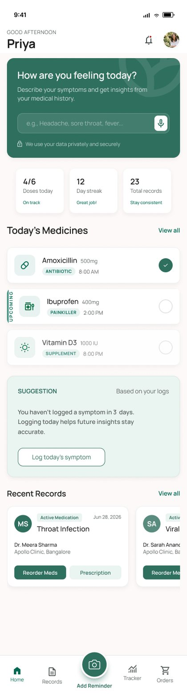
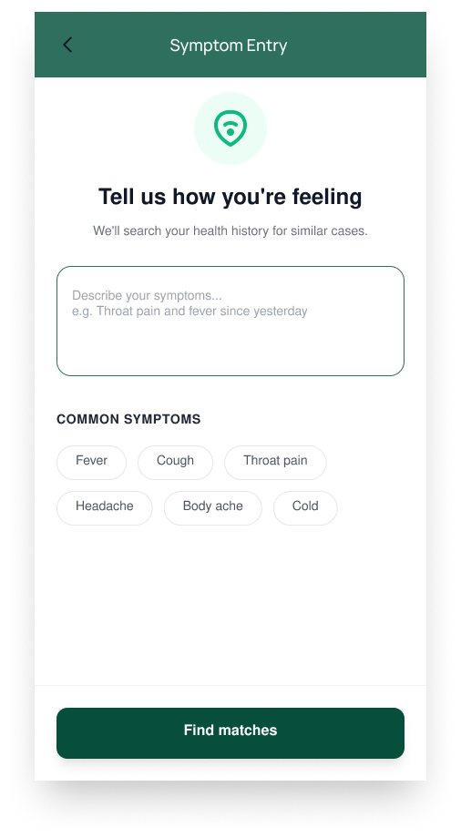
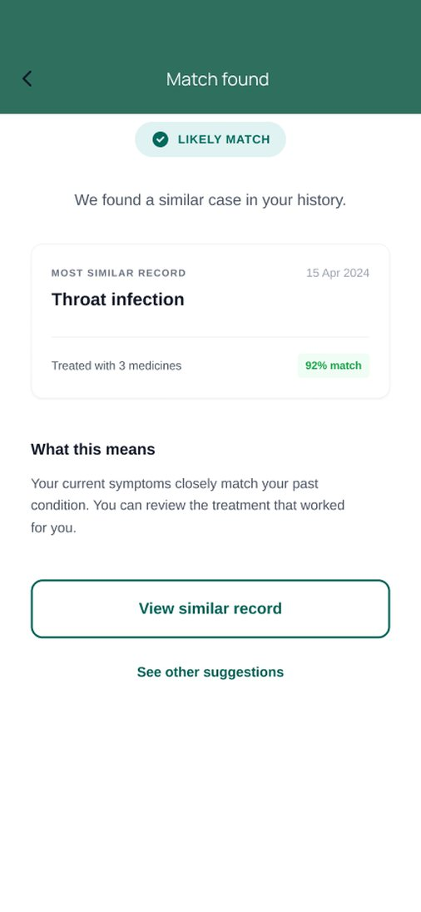
Search your medicine history by symptom
MediTrack lets people with a recurring condition search their own medical history by symptom. Type what you are feeling and the app finds the past illness and prescription that looked like it, so "what did I take last time?" is one search away.
I designed and prototyped it end to end in Figma over about six weeks: research, information architecture, UX and UI, the design system and the linked prototype.
Last time you felt this, what did you take?
Migraines, PCOS, seasonal allergies, mild diabetes: people with a recurring condition have usually solved today's symptom once already. The prescription, the doctor's note and the dose are somewhere on the phone. But history is stored by file and date, and a flare-up arrives as a symptom, so searching a gallery for "fever and sore throat" finds nothing.
I designed around Riya, 26, a marketing executive in Bengaluru with recurring migraines. She keeps prescriptions as photos in her gallery, asks her doctor on WhatsApp and falls back on Google.
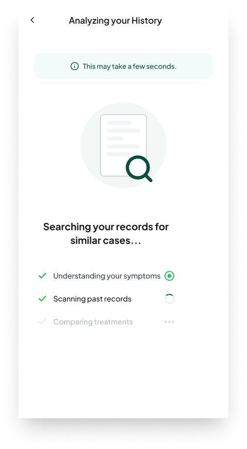
History is stored by file, but needed by symptom
Four things stand between a new symptom and the medicine that worked last time.
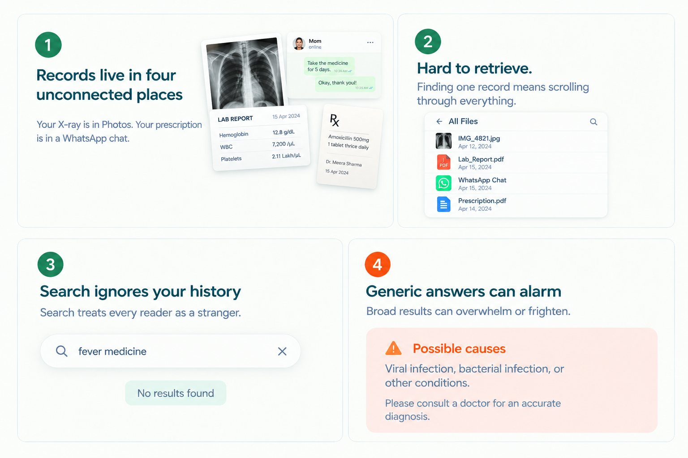
What the search does, step by step
Say the symptom
One field, in your own words.
Search the history
Past illnesses and prescriptions are checked.
See what worked
Last time's medicine, dose and doctor.
Making a memory that never overclaims
Looking at how people search today
I worked from reviews of the apps people already use, and from the workarounds they fall back on.
- Competitors
-
- PractoBooks consultations and stores records.
- 1mgSells and delivers medicines.
- HealthifyTracks food and fitness.
- The gapNone of them starts from a symptom and reads it against your own medicine history.
- Symptom apps
- A migraine patient reviewing a tracker wrote that their notes were "scattered or lost", and that logging mid-attack is "essentially impossible".
- Workarounds
- Gallery photos, WhatsApp chats with a doctor, Notes and Google. The bar is convenience.
Putting the symptom search at the top
The idea started with one question: when a symptom appears, what does someone need first? Last time's answer. Search is how people look for it today, but a gallery or a web search can't give it, because history is stored by file and date, not by symptom.
So the symptom search took the top of Home, where a thumb reaches first. Everything beneath it exists to support that moment.
- Symptom search
- First and largest. The question someone arrives with.
- Doses today
- What is due, so Home is useful even on days with no symptom.
- Active condition
- Frames the search with what is already being managed.
- Recent records
- The last few, ready to open.
- Suggestion
- Waits at the bottom. Nothing here starts a conversation.
Deciding how a match speaks
A percentage reads as more clinically certain than a pattern match deserves. So every match is a word, paired with the record it comes from, and the design never relies on colour alone.
Word over number
Likely, Possible or Unlikely. Never a bare percentage.
Source beside the claim
The record it came from sits right next to it.
Colour never alone
Confidence always has a word as well.
No red for health
Red is reserved for destructive actions.
Checking my own work, three times
Working solo meant being my own second opinion. After each batch of screens I checked the work against the design system before starting the next.
Entry and match states
- A bare 92% score broke the no-scores rule.
- Possible was amber and Unlikely blue, a traffic light again.
- The disclaimer was missing from all four outcome cards.
- Unlikely did not promote the doctor option.
Zero states, checkout, reminders
- Empty-state copy read as gatekeeping.
- The empty Home dropped symptom search.
- "Book a consultation" brought back a cut feature.
- Checkout dead-ended after the address step.
System states and settings
- Confetti played when a record saved.
- Error red had drifted toward alarm red.
- Some headings were heavier than the type rule.
- Copy said "our AI assistant".
From an empty phone to a useful one
Each part of the app is shown in two states, because a happy path hides where the design actually has to work. Switch the tabs to compare.
Home
Filled, it answers first: doses, condition, records. Empty, it still offers the three actions a new person needs, and symptom search never goes missing.
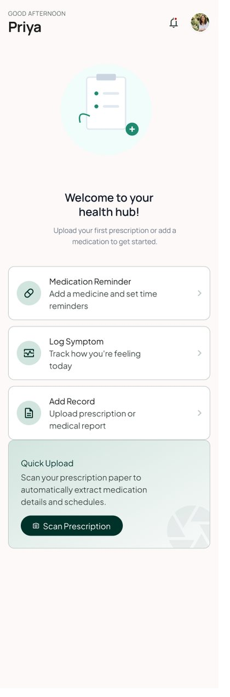
Records
Reorder, Track and Share sit on every record card, so a stored prescription stays useful long after the day it was saved. An empty tab explains the payoff and offers one low-friction action.
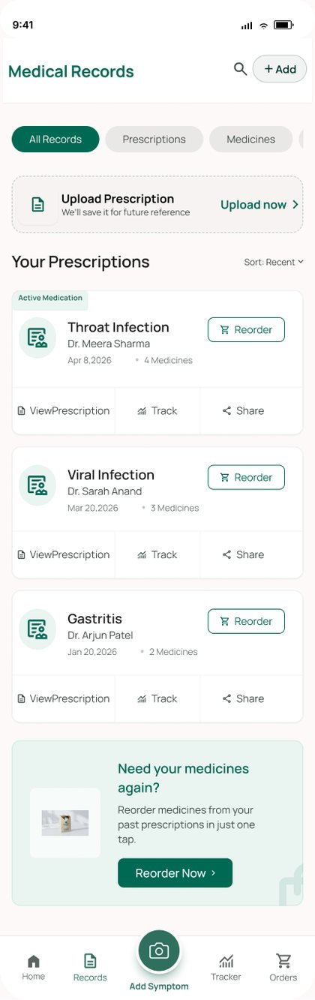
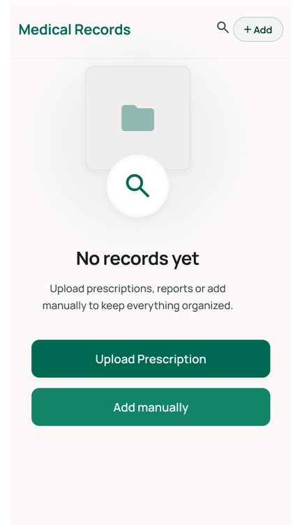
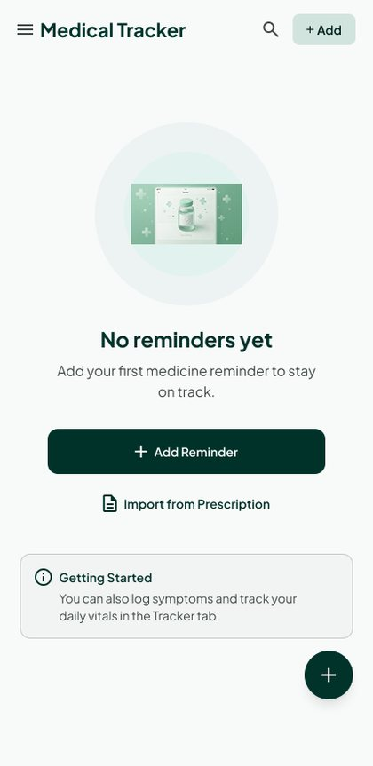
Logging a symptom
One field is required. Notes, photos and severity are optional, so an entry never gets abandoned halfway through a flare-up. While history is searched, a short progress list shows what the app is doing.
When something goes wrong
Recovery screens replace generic errors. A search with no match still saves the entry and offers a next step, a failed payment keeps the cart, and offline lists what still works.
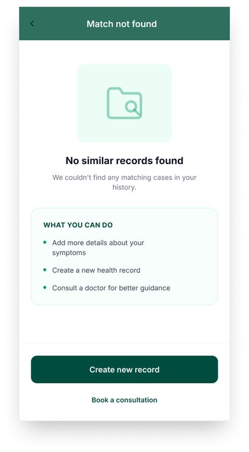
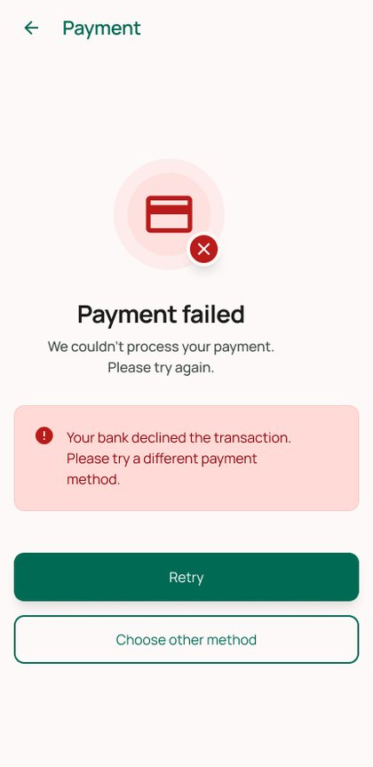
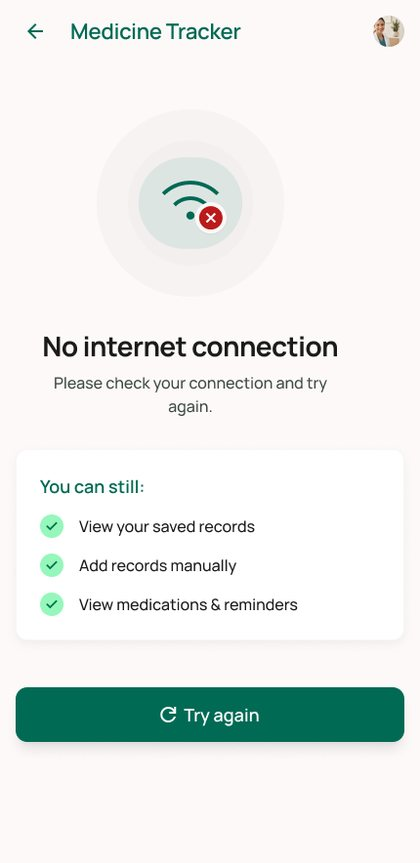
The design system underneath
Built so it could be checked against, which is what made the critique rounds possible.
#2F6F5E#EAF4F1#6E8F86#A9B0AD#C75C4A- Type
- Humanist sans, seven levels from Display to Caption.
- Spacing
- 4px grid. Minimum 44px tap targets.
- Contrast
- 4.5:1 minimum for text.
Edge cases in the flow
| Case | Trigger | Response |
|---|---|---|
| Zero records | First open, nothing logged | A tailored empty state with the payoff and one easy action. |
| No match | Nothing stored fits | The entry still saves. Create-a-record and consult options appear. |
| Unlikely | A match exists, confidence low | Insight is de-emphasised and "Talk to a Doctor" moves up. |
| No connection | Network drops | An offline state listing what still works. |
| Payment failed | Card or UPI declined | A recovery screen. The cart survives and retry is immediate. |
| Permission declined | "Not now" on onboarding | The app stays usable and offers the feature again in context. |
One loop, from symptom to record
I designed and prototyped the symptom search, the records it draws from and the screens around them as one linked flow.
Each problem, and the answer in the design
What I delivered
- Checked
- 12 issues caught across three critique rounds against my own design system.
- Delivered
- A linked Figma prototype of the core loop, with the design system behind it.
What I took from it
Design for the state someone is in
The real user is mid flare-up, one-handed and a little frightened. One field, a word instead of a number and a calm colour all came from picturing that person.
Restraint is harder than expression
A confident answer or a precise score would have improved the demo and hurt the product. Leaving the impressive version out was the real skill.
thanks for reading